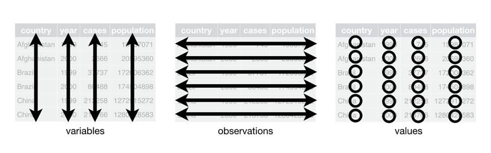

5 Quality & Preparation
Always use and save a scripted program for data processing and analysis. Although it may seem more expeditious to take manual steps, writing code creates a documented and repeatable account of the processing steps taken and will save time and effort in the long-run.
If it is impossible to write code for processing steps, create a detailed record of the workflow in a document.
5.1 Quality Assurance for Data Integrity
Quality assurance (QA) is ensuring the accuracy, consistency, and reliability of data. Quality assurance measures should be implemented on both raw data from external sources and your project’s subsequent datasets; for example, after a major processing step such as data merging.
Eight basic quality assurance measures are listed below, some of which were adopted from (Hutchinson et al. 2015).
Read documentation / metadata that accompanies source datasets. It often comes in separate files (text, pdf, word, xml, etc.).
Always keep raw data in its original form. Do not modify raw datasets; save modified versions in the project’s “intermediate” data folder.
Visually inspect data throughout processing. Visual checks can reveal issues with the data (e.g., repeated values or delimitation errors) that would affect analysis. This habit not only aids debugging processing code but also builds an understanding of the dataset.
Assure data are delimited and line up in proper columns. Check that data is correctly delimited and parsed when imported into the processing program.
Check for missing values in key parameters. Identify any missing or NA values in critical fields that could impact analysis. If there are missing values, identify the type of missingness and discuss solutions (applied example in R).
Identify impossible and anomalous values. Anomalies include values that are outside the expected range, logically impossible, outliers, or inconsistently formatted. In addition to checking for errors, identifying outliers can aid in data exploration by flagging rare events, errors, or interesting phenomena that require further investigation.
Perform and review statistical summaries. Generate summary statistics to understand data distribution and identify inconsistencies or errors. Use these summaries to guide further cleaning, transformation, or data integrity checks.
Visualize data through maps, boxplots, histograms, etc.
Follow good software quality practices described in the software quality section of this guidance, such as pseudocoding, code review, and defensive programming.
5.2 Tidy Data
Raw data rarely comes in structures compatible with your team’s analysis needs. Once the raw data has been checked for quality, additional processing may be required to start exploration and analysis.
Tidy data is a framework for data organization that facilitates efficient exploration, wrangling, and analysis (Wickham 2014). The benefits of storing data in the tidy format are:
- Easier data exploration and analysis
- Simpler manipulation and transformation of data
- Compatibility with data analysis tools (e.g., R and Python)
- Improved reproducibility of analysis
Data in this format are easy to work with, analyze, and combine with other datasets. However, once analyses and data merges start taking place, the structure of newly generated datasets are likely to be more complex and dependent upon the modeling or analysis needs. Discuss the role of tidy data with your team, and if/when in the process project datasets should deviate from the tidy data structure.
5.2.1 The Three Core Principles of Tidy Data
- Each variable forms a column: In a tidy dataset, each variable has its own dedicated column. This means all values associated with that variable are listed vertically within that single column. These are also often referred to as fields or attributes.
- Each observation forms a row: Define an observation and emphasize that each row should represent a single data point. In a tidy dataset, each observation occupies a single row in the table. All the information pertaining to that specific observation is listed horizontally across the columns. These are also often referred to as records.
- Each type of observational unit forms a table: In a tidy dataset, data pertaining to different types of observational units should be separated into distinct tables.

5.2.2 Practical applications
- R: The R tidyverse is a set of R packages designed to work together within the tidy data framework. It includes dplyr, readr, ggplot2, and other packages useful for wrangling data.
- Python: The Python pandas library is useful for creating and working with tidy data, as it uses data frames and includes functions for cleaning, transforming, and manipulating data.
- Julia: The DataFrames.jl library is useful for working with tabular tidy data, and has many powerful tools for manipulating data. The Tidier.jl framework builds on DataFrames.jl and emulates the R tidyverse.
5.2.3 Recommended reading and examples
- General:
- R focus:
- Tidy data | tidyr
- Data tidying – R for Data Science
- Helpful libraries and functions:
- Python focus:
5.3 Data Type Conversion and Standardization
Data types, which define how data is stored and interpreted, were presented in the previous section. This section introduces data type conversion and standardization in ensuring consistent and meaningful analysis.
Data type conversion, or typecasting, is the process of transforming a value from one data type to another. Converting data types ensures compatibility between different datasets and allows for proper analysis. For example, converting age values from string (“25 years”) to integer (25) enables mathematical operations.
Warning: Data type conversion can sometimes lead to loss of information, so it’s crucial to understand the implications of conversion before applying it. Examples:
- When converting the age column from string (“25 years”) to integer (25), information about the unit (years) was lost.
- Converting a float (2.96) to an integer (3) truncates decimals.
- If a date is formatted as “DD/MM/YYYY” (03/12/2015) but is mistakenly interpreted as “MM/DD/YYYY” during conversion to “YYYY-MM-DD”, the resulting date will be incorrect (2015-03-12, instead of the accurate 2015-12-03).
Proper type conversion ensures data is correctly interpreted and can prevent errors in calculations, data analysis, and visualization.
5.3.1 Key Points for Type Conversion
- Understand the source and target types: Knowing the data types involved in conversion helps ensure accurate transformations.
- Handle missing or invalid data: Make sure to manage missing or improperly formatted data that could cause errors during conversion.
- Test conversions: Always verify that conversions produce the expected results to avoid downstream errors in your analysis.
- Remember to always use the ISO 8601 standard format for dates (YYYY-MM-DD).
- Be aware that importing, reimporting, or saving files in certain formats can lead to loss or changes in column data types. For instance, saving data in CSV format often results in date columns being interpreted as text upon re-import, or numeric columns losing precision. This issue arises because formats like CSV lack built-in metadata to store data types, meaning they rely on the importing program to infer types, which can cause inconsistencies and data integrity issues over time. In these cases, columns may need to be re-typecast.
5.3.2 Resources
5.4 Preparation for Analysis
Additional cleaning and transformation steps (often referred to as “data wrangling”) are often necessary, and are highly variable depending on project needs. Examples include:
- filtering based on criteria
- restructuring/reshaping/pivoting
- removing duplicates
- correcting errors in the source data (e.g. misspellings)
- merging
The approach depends on specific project and data needs. The following resources go into greater detail, with examples:
- R
- NCEAS Learning Hub’s coreR Course - 7 Cleaning & Wrangling Data (ucsb.edu)
- Transform – R for Data Science (2e) (hadley.nz)
- R for Reproducible Scientific Analysis: Subsetting Data (swcarpentry.github.io)
- R for Reproducible Scientific Analysis: Data Frame Manipulation with dplyr (swcarpentry.github.io)
- Python